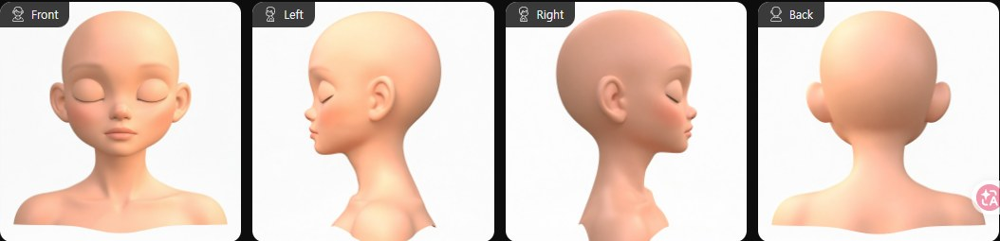
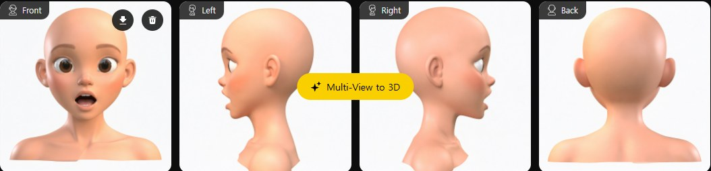
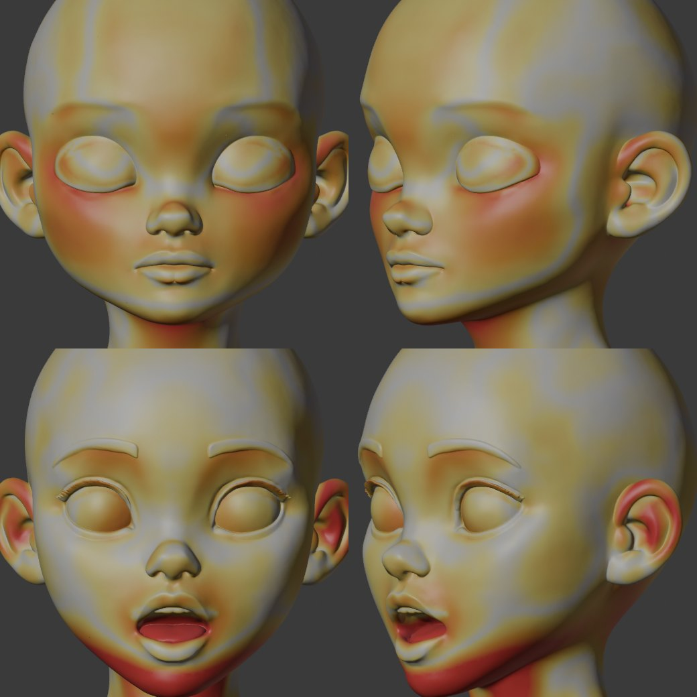
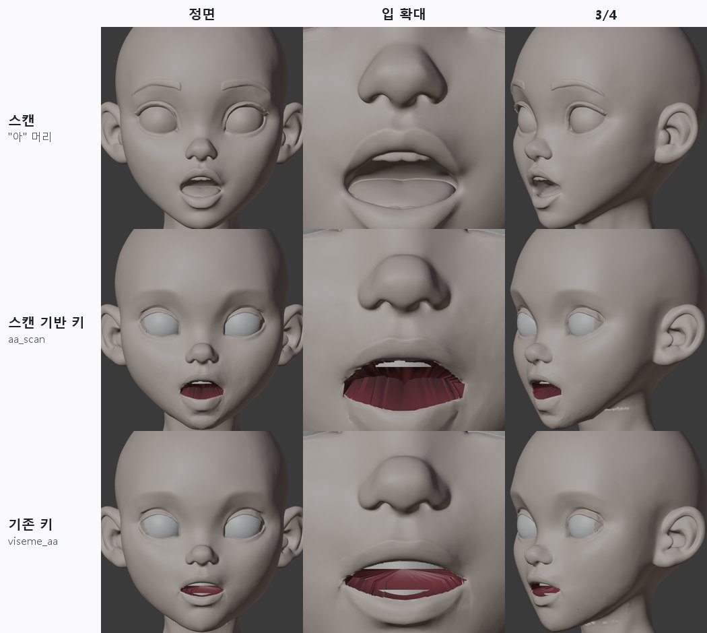
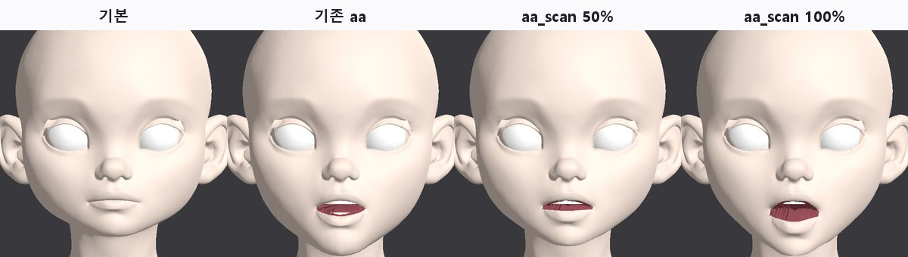
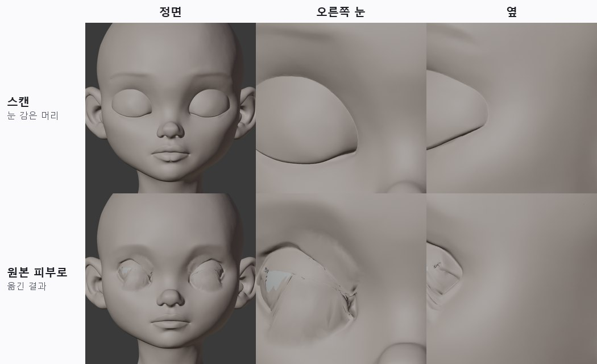

<title>T7 표정 스캔</title>
<link rel="preconnect" href="https://fonts.googleapis.com">
<link rel="preconnect" href="https://fonts.gstatic.com" crossorigin>
<link rel="stylesheet" href="https://fonts.googleapis.com/css2?family=IBM+Plex+Mono:wght@400;500&family=IBM+Plex+Sans+KR:wght@400;500;600;700&display=swap">
<style>
/* Layout: one reading column; figures full width of the column */
:root{--bg:#F5F6F8;--paper:#fff;--ink:#1B1F27;--muted:#5B6473;--line:#DDE1E8;--soft:#EEF1F6;--accent:#2F5BD3;--good:#1E8A52;--bad:#C83A32;--warn:#B26A00;
--f-body:"IBM Plex Sans KR","Malgun Gothic",system-ui,sans-serif;--f-mono:"IBM Plex Mono",ui-monospace,Consolas,monospace}
@media (prefers-color-scheme: dark){:root:not([data-theme="light"]){--bg:#12151B;--paper:#191D25;--ink:#E5E8EE;--muted:#9BA4B3;--line:#2B313C;--soft:#20252F;--accent:#7FA2FF;--good:#5ACB8C;--bad:#FF6F66;--warn:#F0AE48;color-scheme:dark}}
:root[data-theme="dark"]{--bg:#12151B;--paper:#191D25;--ink:#E5E8EE;--muted:#9BA4B3;--line:#2B313C;--soft:#20252F;--accent:#7FA2FF;--good:#5ACB8C;--bad:#FF6F66;--warn:#F0AE48;color-scheme:dark}
*{box-sizing:border-box}
body{background:var(--bg);color:var(--ink);font-family:var(--f-body);font-size:16px;line-height:1.7}
main{max-width:920px;margin:0 auto;padding-inline:16px;padding-block:26px 60px}
h1{font-size:clamp(25px,4vw,33px);margin:0;line-height:1.25;text-wrap:balance}
.sub{color:var(--muted);margin:6px 0 0}
h2{font-size:21px;margin:38px 0 6px;text-wrap:balance}
h3{font-size:17px;margin:20px 0 4px}
p,ul,ol{max-width:72ch} li{margin:3px 0}
figure{margin:16px 0;background:var(--paper);border:1px solid var(--line);border-radius:12px;padding:12px}
figure img{display:block;width:100%;height:auto;border-radius:6px;background:#2a2a2e}
figure svg{display:block;width:100%;height:auto}
figcaption{font-size:14px;color:var(--muted);margin-top:8px}
figcaption b{color:var(--ink)}
.tbl{overflow-x:auto;margin:12px 0}
table{border-collapse:collapse;font-size:14.5px;min-width:540px;width:100%;background:var(--paper)}
th,td{border:1px solid var(--line);padding:6px 10px;text-align:left;vertical-align:top}
th{background:var(--soft)}
td.num{font-family:var(--f-mono);font-variant-numeric:tabular-nums;white-space:nowrap}
.good{color:var(--good);font-weight:600}.bad{color:var(--bad);font-weight:600}.warn{color:var(--warn);font-weight:600}
.box{background:var(--paper);border:1px solid var(--line);border-left:4px solid var(--accent);border-radius:0 10px 10px 0;padding:12px 16px;margin:14px 0}
code{font-family:var(--f-mono);font-size:13.5px;background:var(--soft);padding:1px 5px;border-radius:4px;overflow-wrap:anywhere}
svg text{font-family:var(--f-body)}
.s-ink{fill:var(--ink)}.s-muted{fill:var(--muted)}.s-paper{fill:var(--paper)}.s-soft{fill:var(--soft)}.s-acc{fill:var(--accent)}.s-good{fill:var(--good)}.s-bad{fill:var(--bad)}
.st-acc{stroke:var(--accent)}.st-good{stroke:var(--good)}.st-ink{stroke:var(--ink)}.st-muted{stroke:var(--muted)}.st-bad{stroke:var(--bad)}
</style>
<main>
<h1>T7 · 표정 스캔: Tripo로 표정 머리를 만들어 원본에 옮기기</h1>
<p class="sub">2026-10-12 · character1 v3 · 눈 감은 머리 + "아" 입 머리 · Tripo 30크레딧 · 원본 모양은 그대로, 표정 키만 추가</p>
<div class="box"><b>결론</b>
<ul>
<li><b>입("아"): 성공.</b> 스캔에서 입이 벌어진 모양과 턱이 내려간 정도를 가져와 원본에 <code>aa_scan</code> 키를 만들었습니다. 기존 템플릿 '아'(가는 틈)보다 실제 "아"처럼 둥글게 벌어집니다(가운데 높이 20mm로 스캔과 같음). 기본 모양 변화는 0이고, Godot에서도 50%·100% 모두 정상입니다.</li>
<li><b>눈 감기: 모양을 옮기는 방식은 실패.</b> 원본 눈 구멍이 너무 크고 테두리 피부가 좁아서, 스캔의 감은 눈꺼풀 모양으로 피부를 끌어 덮으면 주름과 구멍이 생깁니다. 대신 <b>측정용으로는 쓸모가 있습니다.</b> 스캔의 감은 눈꺼풀은 원본 눈알 표면과 거의 같은 자리(중앙값 −0.2~−0.3mm, 범위 ±2mm)에 있습니다. 그래서 T1 눈꺼풀 부품(눈알 0.8mm 앞)이 맞는 위치라는 것을 생성기 쪽 결과로 확인했습니다.</li>
<li><b>비용</b>: 3D 생성 2회 × 15 = 30크레딧. 참고 이미지 수정과 4방향 이미지는 무료였습니다.</li>
</ul></div>

<h2>1. 순서</h2>
<figure>
<svg viewBox="0 0 860 250" role="img" aria-label="T7 순서">
  <g font-size="12.5">
    <rect x="6" y="20" width="196" height="76" rx="8" class="s-paper st-acc" stroke-width="1.5"/><text x="104" y="46" text-anchor="middle" class="s-ink" font-weight="600">① 원본 정면 이미지</text><text x="104" y="66" text-anchor="middle" class="s-muted">v3를 만든 그 이미지</text><text x="104" y="84" text-anchor="middle" class="s-muted">무표정·입 다묾</text>
    <rect x="222" y="20" width="196" height="76" rx="8" class="s-paper st-acc" stroke-width="1.5"/><text x="320" y="46" text-anchor="middle" class="s-ink" font-weight="600">② 표정만 바꾸기 (무료)</text><text x="320" y="66" text-anchor="middle" class="s-muted">Tripo 이미지 도구</text><text x="320" y="84" text-anchor="middle" class="s-muted">Nano Banana / Pro</text>
    <rect x="438" y="20" width="196" height="76" rx="8" class="s-paper st-acc" stroke-width="1.5"/><text x="536" y="46" text-anchor="middle" class="s-ink" font-weight="600">③ 4방향 이미지 (무료)</text><text x="536" y="66" text-anchor="middle" class="s-muted">앞·좌·우·뒤</text><text x="536" y="84" text-anchor="middle" class="s-muted">사람이 확인</text>
    <rect x="654" y="20" width="200" height="76" rx="8" class="s-paper st-bad" stroke-width="1.5"/><text x="754" y="46" text-anchor="middle" class="s-ink" font-weight="600">④ 3D 생성 (15크레딧)</text><text x="754" y="66" text-anchor="middle" class="s-muted">H3.1, 부품 나누기 끔</text><text x="754" y="84" text-anchor="middle" class="s-muted">텍스처 끔, 20만 삼각형</text>
    <rect x="6" y="140" width="268" height="76" rx="8" class="s-paper st-acc" stroke-width="1.5"/><text x="140" y="166" text-anchor="middle" class="s-ink" font-weight="600">⑤ 원본에 정렬</text><text x="140" y="186" text-anchor="middle" class="s-muted">회전·이동·크기만 (휘지 않음)</text><text x="140" y="204" text-anchor="middle" class="s-muted">표정과 무관한 부위로 맞춤</text>
    <rect x="294" y="140" width="268" height="76" rx="8" class="s-paper st-acc" stroke-width="1.5"/><text x="428" y="166" text-anchor="middle" class="s-ink" font-weight="600">⑥ 표정 부위만 옮기기</text><text x="428" y="186" text-anchor="middle" class="s-muted">원본 점이 스캔 모양을 따라감</text><text x="428" y="204" text-anchor="middle" class="s-muted">= 새 셰이프키 (기본 모양 그대로)</text>
    <rect x="582" y="140" width="272" height="76" rx="8" class="s-paper st-good" stroke-width="2"/><text x="718" y="166" text-anchor="middle" class="s-ink" font-weight="600">⑦ 검사·Godot</text><text x="718" y="186" text-anchor="middle" class="s-muted">스캔과의 차이, 뒤집힌 면</text><text x="718" y="204" text-anchor="middle" class="s-muted">엔진에서 재생</text>
    <path d="M202 58 H218 M418 58 H434 M634 58 H650 M754 96 V118 H140 V136 M274 178 H290 M562 178 H578" fill="none" class="st-muted" stroke-width="2"/>
    <text x="6" y="242" class="s-muted">①~④는 Tripo Studio(사용자 계정, Chrome)에서, ⑤~⑦은 Blender·Godot 무인 실행입니다.</text>
  </g>
</svg>
<figcaption><b>그림 1.</b> 처리 순서. 빨간 칸만 돈이 듭니다.</figcaption>
</figure>

<h2>2. 참고 이미지 (생성 전에 확인)</h2>
<figure><figcaption><b>그림 2.</b> 눈 감은 얼굴. 원본 정면 이미지에 "눈만 편하게 감기, 나머지는 그대로"로 수정했습니다(Nano Banana, 무료). 한 번에 원하는 결과가 나왔습니다.</figcaption></figure>
<figure><figcaption><b>그림 3.</b> "아" 입. 기본 Nano Banana로는 놀란 "오"나 웃는 입이 나와서, Nano Banana Pro에 "입꼬리를 올리지 말 것, 턱을 내린 아"를 넣어 세 번째에 얻었습니다. 이 이미지는 눈썹과 눈도 조금 바뀌었습니다(놀란 듯). 그래서 아래 얼굴만 가져다 씁니다.</figcaption></figure>

<h2>3. 원본에 정렬</h2>
<p>새로 만든 머리는 같은 캐릭터라도 원본과 조금씩 다릅니다. 그래서 휘지 않는 변환(회전·이동·크기 하나)만 풀었습니다. 맞출 때는 표정이 바꾸지 않는 부위만 씁니다. 눈 감은 머리는 눈 주변을 뺀 전체, "아" 머리는 정수리·귀·코입니다. 먼저 기준점으로 대략 맞춘 뒤, 가장 가까운 점끼리 반복해서 맞추고(ICP) 많이 어긋난 20%는 버렸습니다.</p>
<figure><figcaption><b>그림 4.</b> 정렬한 스캔을 원본까지의 거리로 칠했습니다(회색 0, 노랑 1mm, 주황 3mm, 빨강 6mm 이상). 위는 눈 감은 머리, 아래는 "아" 머리입니다. 표정 부위(감은 눈, 벌린 입, 내려간 턱)가 다른 것은 당연합니다. 그 밖에 볼·귀·목도 3~6mm 다릅니다. 같은 이미지를 바탕으로 해도 생성할 때마다 생기는 차이입니다.</figcaption></figure>
<div class="tbl"><table>
<tr><th>스캔</th><th>크기 보정</th><th>바뀌면 안 되는 부위의 차이 (중앙 / 95%)</th><th>뜻</th></tr>
<tr><td>눈 감은 머리</td><td class="num">×1.004</td><td class="num">1.35 / 5.6mm</td><td rowspan="2">스캔을 통째로 쓰면 얼굴이 1~2mm, 볼·귀는 더 많이 바뀝니다. 그래서 <b>표정 부위만, 부드럽게 경계를 두고</b> 가져옵니다.</td></tr>
<tr><td>"아" 머리</td><td class="num">×1.084</td><td class="num">0.59 / 6.4mm</td></tr>
</table></div>
<p>"아" 머리의 크기 보정이 8%인 이유: 정리 단계가 머리 높이(턱~정수리)를 24cm로 맞추는데, 턱이 내려가 머리가 길어진 만큼 작게 줄어 있었습니다. 정렬이 이를 자동으로 바로잡았습니다.</p>

<h2>4. 입 "아": 스캔 기반 키</h2>
<ol>
  <li><b>턱 세기</b>: 기존 턱 벌림 키를 몇 배 하면 스캔의 턱 끝에 가장 가까운지 찾았습니다. 1.15배에서 차이 1.8mm였습니다(1배일 때 3.1mm).</li>
  <li><b>스캔의 입 벌림 윤곽</b>: 정면에서 깊이를 재서 "원본 입술보다 6mm 이상 깊은 곳"을 입 벌림으로 봤습니다. 그 윗선과 아랫선이 윤곽입니다. 폭 49mm(원본 53mm), 가운데 높이 20mm입니다.</li>
  <li><b>입술 가장자리</b>: 원본의 윗입술·아랫입술 가장자리 점을 입꼬리 사이 같은 비율 위치의 스캔 윤곽으로 보냈습니다.</li>
  <li><b>아래 얼굴</b>: 나머지 피부는 스캔 표면으로 붙인 뒤, 움직임을 매끄럽게 폈습니다. 두 머리 사이의 1~2mm 잡음을 없애기 위해서입니다. 코 밑과 볼 쪽으로 갈수록 영향이 줄어듭니다.</li>
  <li><b>입 안</b>: 입 안 주머니는 가까운 입술 가장자리를 따라가고, 아랫니·혀는 턱 키 1.15배를 씁니다.</li>
</ol>
<figure><figcaption><b>그림 5.</b> 위: 스캔. 가운데: 원본에 만든 <code>aa_scan</code>. 아래: 기존 템플릿 <code>viseme_aa</code>. 스캔 기반 키는 스캔처럼 둥글게 벌어지고 턱이 함께 내려갑니다. 기존 키는 가는 틈만 벌어집니다.</figcaption></figure>
<div class="tbl"><table>
<tr><th>항목</th><th>값</th></tr>
<tr><td>가운데 입 벌림 높이 (스캔 / 만든 키)</td><td class="num">20.0 / 20.3mm</td></tr>
<tr><td>아래 얼굴의 스캔과의 차이 (중앙 / 95%)</td><td class="num">1.3 / 3.6mm (매끄럽게 편 대가. 펴기 전 0.5 / 1.8mm는 울퉁불퉁)</td></tr>
<tr><td>키가 뒤집은 면</td><td class="num">155 / 33,973 (0.5%, 입 안 주머니 주름과 목 구김)</td></tr>
<tr><td>기본 모양 변화</td><td class="num good">0.0mm</td></tr>
</table></div>
<h3>매끄럽게 펴는 정도</h3>
<p>스캔 표면에 그대로 붙이면 두 머리의 잡음 때문에 입술 주변이 울퉁불퉁하고, 코 밑에 가로줄이 생겼습니다. 영향 범위의 경계를 12mm에 걸쳐 서서히 줄이고, 움직임을 300번 이웃 평균으로 폈습니다. 40번, 120번, 300번을 비교해 300번을 골랐습니다. 입 벌림 모양은 그대로이고 피부만 매끈해집니다.</p>

<h2>5. Godot에서 확인</h2>
<figure><figcaption><b>그림 6.</b> T3와 같은 Godot 시험 장면입니다. 표정 키 7개(기존 6 + <code>aa_scan</code>)가 불러와지고, 50%에서도 중간 모양이 자연스럽습니다.</figcaption></figure>

<h2>6. 눈 감기: 모양 이식은 실패, 측정은 성공</h2>
<h3>모양을 옮겨 본 결과</h3>
<p>눈꺼풀 피부를 눈 축 둘레로 돌려 위아래 가장자리를 만나게 하고, 높이는 스캔의 감은 눈꺼풀 표면에서 가져왔습니다. 두 번 고쳤지만 주름과 바깥 눈꼬리 구멍이 남았습니다.</p>
<figure><figcaption><b>그림 7.</b> 위: 스캔의 감은 눈(매끈한 반구). 아래: 원본 피부로 옮긴 결과(주름, 흰 구멍). 원본 눈 구멍은 가로 약 40mm로 크고, 그 둘레 피부는 좁은 띠입니다. 이 띠를 늘려 구멍 전체를 덮어야 해서 면이 접힙니다. T1에서 피부 깜빡임이 실패한 이유와 같습니다.</figcaption></figure>
<h3>측정으로 쓰기</h3>
<p>스캔의 감은 눈꺼풀이 원본 눈알 표면에서 얼마나 떨어져 있는지 쟀습니다. 눈 축 둘레로 광선을 쏘아 단면을 구했습니다.</p>
<figure>
<svg viewBox="0 0 820 330" role="img" aria-label="감은 눈꺼풀 단면">
<text x="12" y="150.0" transform="rotate(-90 12 150.0)" text-anchor="middle" class="s-muted" font-size="11">눈알 표면에서 거리 (mm)</text>
<text x="228" y="16" text-anchor="middle" class="s-ink" font-weight="600" font-size="14">오른쪽 눈 (가운데 단면)</text>
<rect x="131.0" y="38" width="194.0" height="216" class="s-soft"/>
<text x="228.0" y="52" text-anchor="middle" class="s-muted" font-size="11">원본 눈 구멍</text>
<line x1="56" x2="400.0" y1="254.0" y2="254.0" class="st-muted" stroke-width="0.4" opacity="0.5"/>
<text x="50" y="258.0" text-anchor="end" class="s-muted" font-size="11">-4</text>
<line x1="56" x2="400.0" y1="218.0" y2="218.0" class="st-muted" stroke-width="0.4" opacity="0.5"/>
<text x="50" y="222.0" text-anchor="end" class="s-muted" font-size="11">-2</text>
<line x1="56" x2="400.0" y1="182.0" y2="182.0" class="st-muted" stroke-width="0.4" opacity="0.5"/>
<text x="50" y="186.0" text-anchor="end" class="s-muted" font-size="11">0</text>
<line x1="56" x2="400.0" y1="146.0" y2="146.0" class="st-muted" stroke-width="0.4" opacity="0.5"/>
<text x="50" y="150.0" text-anchor="end" class="s-muted" font-size="11">2</text>
<line x1="56" x2="400.0" y1="110.0" y2="110.0" class="st-muted" stroke-width="0.4" opacity="0.5"/>
<text x="50" y="114.0" text-anchor="end" class="s-muted" font-size="11">4</text>
<line x1="56" x2="400.0" y1="74.0" y2="74.0" class="st-muted" stroke-width="0.4" opacity="0.5"/>
<text x="50" y="78.0" text-anchor="end" class="s-muted" font-size="11">6</text>
<line x1="56" x2="400.0" y1="38.0" y2="38.0" class="st-muted" stroke-width="0.4" opacity="0.5"/>
<text x="50" y="42.0" text-anchor="end" class="s-muted" font-size="11">8</text>
<text x="74.1" y="270" text-anchor="middle" class="s-muted" font-size="11">-60°</text>
<text x="134.1" y="270" text-anchor="middle" class="s-muted" font-size="11">-40°</text>
<text x="194.1" y="270" text-anchor="middle" class="s-muted" font-size="11">-20°</text>
<text x="254.1" y="270" text-anchor="middle" class="s-muted" font-size="11">0°</text>
<text x="314.1" y="270" text-anchor="middle" class="s-muted" font-size="11">20°</text>
<text x="374.1" y="270" text-anchor="middle" class="s-muted" font-size="11">40°</text>
<line x1="56" x2="400.0" y1="182.0" y2="182.0" class="st-ink" stroke-dasharray="4 3" stroke-width="1.2"/>
<line x1="56" x2="400.0" y1="167.6" y2="167.6" class="st-good" stroke-width="2"/>
<polyline points="56.0,38.0 58.5,38.0 61.0,38.0 63.6,38.0 66.1,38.0 68.6,38.0 71.1,38.0 73.6,64.0 76.2,106.1 78.7,139.1 81.2,165.1 83.7,254.0 86.2,244.7 88.7,221.2 91.3,191.9 93.8,140.9 96.3,131.2 98.8,127.9 101.3,125.8 103.8,124.1 106.4,124.0 108.9,125.1 111.4,127.2 113.9,129.2 116.4,131.2 119.0,133.2 121.5,135.1 124.0,136.8 126.5,138.5 129.0,140.2 131.5,141.8 134.1,143.4 136.6,145.1 139.1,146.7 141.6,148.2 144.1,149.7 146.6,151.2 149.2,152.7 151.7,154.2 154.2,155.5 156.7,157.0 159.2,158.5 161.7,160.0 164.3,161.5 166.8,162.8 169.3,164.2 171.8,165.9 174.3,167.7 176.9,169.3 179.4,171.0 181.9,172.6 184.4,174.4 186.9,176.4 189.4,178.2 192.0,180.0 194.5,181.7 197.0,183.5 199.5,185.4 202.0,187.2 204.5,188.9 207.1,190.5 209.6,192.0 212.1,193.4 214.6,194.8 217.1,196.3 219.6,197.6 222.2,198.8 224.7,200.0 227.2,201.0 229.7,202.0 232.2,203.1 234.8,204.1 237.3,205.0 239.8,205.9 242.3,206.8 244.8,207.6 247.3,208.4 249.9,209.0 252.4,209.6 254.9,210.2 257.4,210.8 259.9,211.5 262.4,212.0 265.0,212.5 267.5,212.8 270.0,213.2 272.5,213.5 275.0,213.7 277.6,213.9 280.1,214.1 282.6,214.1 285.1,214.3 287.6,214.3 290.1,214.2 292.7,214.1 295.2,213.9 297.7,213.8 300.2,213.7 302.7,213.5 305.2,213.2 307.8,212.8 310.3,212.4 312.8,212.0 315.3,211.7 317.8,211.2 320.3,210.7 322.9,210.1 325.4,209.5 327.9,208.7 330.4,207.8 332.9,206.8 335.5,205.7 338.0,204.5 340.5,203.2 343.0,201.8 345.5,200.2 348.0,198.3 350.6,196.4 353.1,194.5 355.6,192.0 358.1,138.2 360.6,39.2 363.1,38.0 365.7,38.0 368.2,38.0 370.7,38.0 373.2,38.0 375.7,38.0 378.3,38.0 380.8,38.0 383.3,38.0 385.8,38.0 388.3,38.0 390.8,38.0 393.4,38.0 395.9,38.0 398.4,38.0" fill="none" class="st-bad" stroke-width="2.4"/>
<text x="228" y="292" text-anchor="middle" class="s-muted" font-size="11">눈 축 둘레 각도 (위쪽이 +)</text>
<text x="638" y="16" text-anchor="middle" class="s-ink" font-weight="600" font-size="14">왼쪽 눈 (가운데 단면)</text>
<rect x="541.6" y="38" width="192.7" height="216" class="s-soft"/>
<text x="638.0" y="52" text-anchor="middle" class="s-muted" font-size="11">원본 눈 구멍</text>
<line x1="466.0" x2="810.0" y1="254.0" y2="254.0" class="st-muted" stroke-width="0.4" opacity="0.5"/>
<text x="460.0" y="258.0" text-anchor="end" class="s-muted" font-size="11">-4</text>
<line x1="466.0" x2="810.0" y1="218.0" y2="218.0" class="st-muted" stroke-width="0.4" opacity="0.5"/>
<text x="460.0" y="222.0" text-anchor="end" class="s-muted" font-size="11">-2</text>
<line x1="466.0" x2="810.0" y1="182.0" y2="182.0" class="st-muted" stroke-width="0.4" opacity="0.5"/>
<text x="460.0" y="186.0" text-anchor="end" class="s-muted" font-size="11">0</text>
<line x1="466.0" x2="810.0" y1="146.0" y2="146.0" class="st-muted" stroke-width="0.4" opacity="0.5"/>
<text x="460.0" y="150.0" text-anchor="end" class="s-muted" font-size="11">2</text>
<line x1="466.0" x2="810.0" y1="110.0" y2="110.0" class="st-muted" stroke-width="0.4" opacity="0.5"/>
<text x="460.0" y="114.0" text-anchor="end" class="s-muted" font-size="11">4</text>
<line x1="466.0" x2="810.0" y1="74.0" y2="74.0" class="st-muted" stroke-width="0.4" opacity="0.5"/>
<text x="460.0" y="78.0" text-anchor="end" class="s-muted" font-size="11">6</text>
<line x1="466.0" x2="810.0" y1="38.0" y2="38.0" class="st-muted" stroke-width="0.4" opacity="0.5"/>
<text x="460.0" y="42.0" text-anchor="end" class="s-muted" font-size="11">8</text>
<text x="481.5" y="270" text-anchor="middle" class="s-muted" font-size="11">-60°</text>
<text x="542.0" y="270" text-anchor="middle" class="s-muted" font-size="11">-40°</text>
<text x="602.5" y="270" text-anchor="middle" class="s-muted" font-size="11">-20°</text>
<text x="663.0" y="270" text-anchor="middle" class="s-muted" font-size="11">0°</text>
<text x="723.5" y="270" text-anchor="middle" class="s-muted" font-size="11">20°</text>
<text x="784.0" y="270" text-anchor="middle" class="s-muted" font-size="11">40°</text>
<line x1="466.0" x2="810.0" y1="182.0" y2="182.0" class="st-ink" stroke-dasharray="4 3" stroke-width="1.2"/>
<line x1="466.0" x2="810.0" y1="167.6" y2="167.6" class="st-good" stroke-width="2"/>
<polyline points="466.5,38.0 469.1,38.0 471.6,38.0 474.2,38.0 476.7,38.0 479.3,38.0 481.9,39.9 484.4,72.9 487.0,111.5 489.5,135.3 492.1,158.8 494.7,254.0 497.2,230.3 499.8,201.0 502.3,154.5 504.9,132.1 507.5,128.7 510.0,125.5 512.6,124.3 515.1,124.0 517.7,124.8 520.3,126.6 522.8,128.3 525.4,129.9 527.9,131.4 530.5,133.1 533.1,134.9 535.6,136.5 538.2,138.1 540.7,139.9 543.3,141.6 545.9,143.2 548.4,145.0 551.0,146.7 553.6,148.3 556.1,149.9 558.7,151.6 561.2,153.4 563.8,155.0 566.4,156.7 568.9,158.2 571.5,159.8 574.0,161.4 576.6,163.1 579.2,164.9 581.7,166.6 584.3,168.4 586.8,170.1 589.4,171.8 592.0,173.7 594.5,175.5 597.1,177.3 599.6,179.1 602.2,181.1 604.8,183.0 607.3,184.7 609.9,186.5 612.4,188.3 615.0,190.0 617.6,191.7 620.1,193.3 622.7,194.9 625.2,196.5 627.8,197.9 630.4,199.2 632.9,200.6 635.5,201.9 638.1,203.1 640.6,204.2 643.2,205.1 645.7,206.0 648.3,206.9 650.9,207.8 653.4,208.7 656.0,209.4 658.5,210.2 661.1,210.8 663.7,211.5 666.2,212.1 668.8,212.8 671.3,213.4 673.9,213.9 676.5,214.4 679.0,214.9 681.6,215.3 684.1,215.6 686.7,215.9 689.3,216.1 691.8,216.3 694.4,216.4 696.9,216.5 699.5,216.5 702.1,216.4 704.6,216.4 707.2,216.4 709.7,216.3 712.3,216.1 714.9,215.9 717.4,215.7 720.0,215.3 722.6,215.0 725.1,214.7 727.7,214.2 730.2,213.7 732.8,213.1 735.4,212.3 737.9,211.5 740.5,210.5 743.0,209.4 745.6,208.1 748.2,206.7 750.7,205.3 753.3,203.8 755.8,202.1 758.4,200.0 761.0,197.9 763.5,195.6 766.1,193.1 768.6,121.6 771.2,46.8 773.8,38.0 776.3,38.0 778.9,38.0 781.4,38.0 784.0,38.0 786.6,38.0 789.1,38.0 791.7,38.0 794.2,38.0 796.8,38.0 799.4,38.0 801.9,38.0 804.5,38.0 807.1,38.0 809.6,38.0" fill="none" class="st-bad" stroke-width="2.4"/>
<text x="638" y="292" text-anchor="middle" class="s-muted" font-size="11">눈 축 둘레 각도 (위쪽이 +)</text>
<g font-size="12" transform="translate(70,318)">
<line x1="0" x2="22" y1="-4" y2="-4" class="st-bad" stroke-width="2.4"/><text x="28" y="0" class="s-ink">스캔의 감은 눈꺼풀</text>
<line x1="170" x2="192" y1="-4" y2="-4" class="st-ink" stroke-dasharray="4 3" stroke-width="1.2"/><text x="198" y="0" class="s-ink">원본 눈알 표면</text>
<line x1="320" x2="342" y1="-4" y2="-4" class="st-good" stroke-width="2"/><text x="348" y="0" class="s-ink">T1 눈꺼풀 부품 위치 (0.8mm 앞)</text>
</g></svg>
<figcaption><b>그림 8.</b> 눈 가운데 단면. 빨간 선이 스캔의 감은 눈꺼풀입니다. 눈 구멍 범위(회색 바탕) 안에서 원본 눈알 표면(점선) 근처 ±2mm에 있습니다. T1 부품 위치(초록, 0.8mm 앞)와 1~2mm 안에서 맞습니다. 눈꺼풀이 만나는 선(주름)은 깊이 0.02~0.05mm로 거의 없었습니다. 생성기는 감은 눈을 매끈한 반구로 만든다는 뜻입니다.</figcaption>
</figure>
<div class="tbl"><table>
<tr><th>눈</th><th>눈알 표면에서 감은 눈꺼풀까지 (5% / 중앙 / 95%)</th></tr>
<tr><td>오른쪽</td><td class="num">−1.9 / −0.3 / +2.1mm</td></tr>
<tr><td>왼쪽</td><td class="num">−1.9 / −0.2 / +2.3mm</td></tr>
</table></div>
<p>정리하면 눈은 T1 부품 방식을 유지합니다. 스캔은 부품의 감은 위치와 볼록함을 맞추는 기준으로 씁니다.</p>

<h2>7. 비용과 기록</h2>
<div class="tbl"><table>
<tr><th>작업</th><th>Tripo 작업 ID</th><th>크레딧</th></tr>
<tr><td>참고 이미지 수정 4장, 4방향 이미지 2세트</td><td>-</td><td class="num">0</td></tr>
<tr><td>눈 감은 머리 (196,304면)</td><td><code>2b9f6317</code></td><td class="num">15</td></tr>
<tr><td>"아" 머리 (188,544면, 입 안·혀 포함)</td><td><code>64acd818</code></td><td class="num">15</td></tr>
<tr><td colspan="2">합계 (잔액 22,795 → 22,765)</td><td class="num">30</td></tr>
</table></div>

<h2>8. 다음에 할 수 있는 것</h2>
<ul>
  <li><b>나머지 입모양</b>: 이·우·에·오를 같은 방법으로 만들면 템플릿 입모양을 스캔 기반으로 모두 바꿀 수 있습니다. 4 × 15 = 60크레딧이고 승인이 필요합니다.</li>
  <li><b>입 안 주머니 주름</b>: 크게 벌리면 입 안 주머니가 접혀 빨간 주름이 보입니다. 주머니를 벌림 크기에 맞춰 넓히는 보정이 필요합니다.</li>
  <li><b>자동화</b>: ①~④는 지금 Chrome에서 Tripo Studio를 조작합니다. 이미지 수정 프롬프트와 생성 설정은 정해졌으므로, 같은 순서를 스크립트로 반복할 수 있습니다. ⑤~⑦은 이미 무인으로 실행됩니다.</li>
  <li><b>T1 보정</b>: 측정값(중앙 −0.3mm)은 감은 눈꺼풀이 눈알에 더 붙어도 된다는 뜻입니다. 부품의 0.8mm를 줄여 보는 시험을 할 수 있습니다.</li>
</ul>

<h2>9. 파일</h2>
<ul>
  <li><code>tools/face_auto/expr_align.py</code>: 기준점 + 가장 가까운 점 반복으로 휘지 않는 정렬, 바뀌면 안 되는 부위의 차이 보고</li>
  <li><code>tools/face_auto/expr_keys.py</code>: <code>aa</code>(턱 세기, 입 벌림 윤곽, 입술 가장자리, 매끄럽게 펴기, 입 안) / <code>blink</code>(감은 눈꺼풀 단면 측정, 시험용 이식)</li>
  <li>스캔 원본(유료) 보관: <code>art/characters/character1_face_v3/source/tripo_eyes_closed_2b9f6317.glb</code>, <code>tripo_mouth_ah_64acd818.glb</code></li>
  <li>결과물(임시 폴더 <code>t7/</code>): 정렬 blend, <code>keys/aa.blend</code>(aa_scan 키 포함), Godot 시험 <code>t7/godot</code></li>
</ul>
</main>
